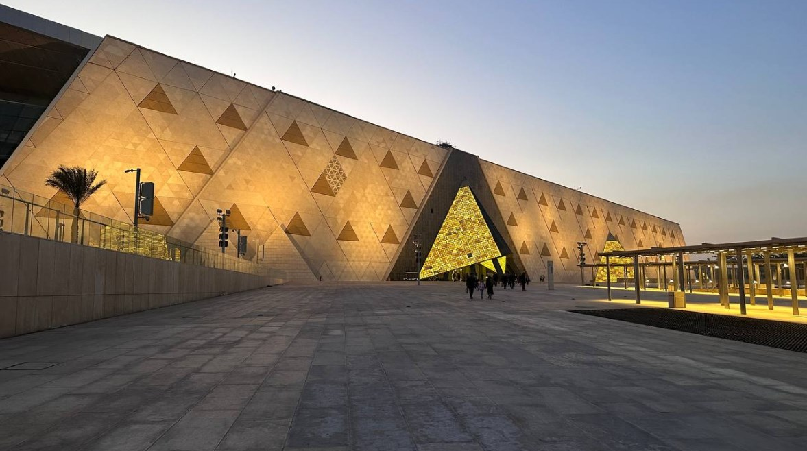
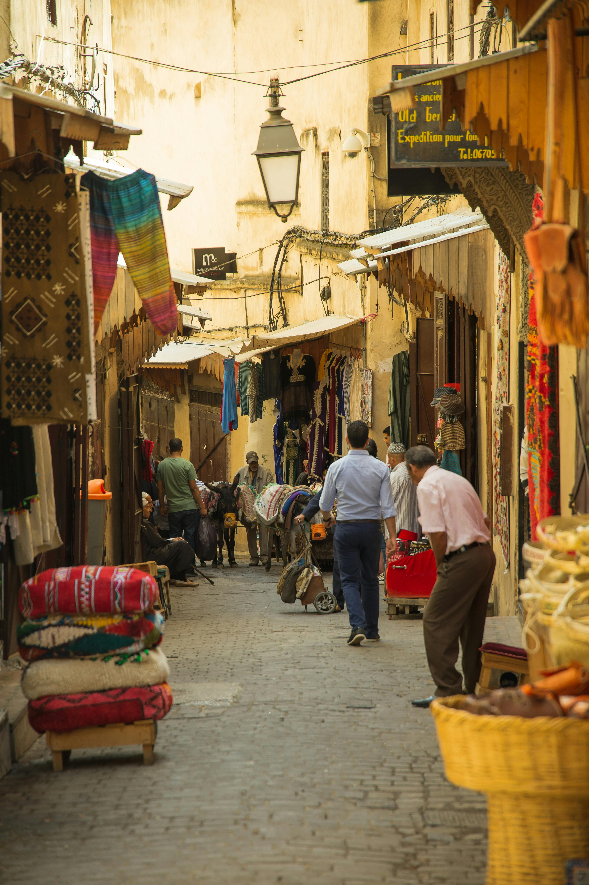

أبرز الأماكن السياحية في القاهرة

الأهرامات
تعتبر الأهرامات من عجائب العالم السبع القديمة، وهي واحدة من أهم المعالم السياحية في مصر.

المتحف المصري
يضم المتحف المصري مجموعة كبيرة من الآثار الفرعونية القديمة، بما في ذلك توابيت الملك توت عنخ آمون.

خان الخليلي
سوق تاريخي في القاهرة، مشهور بالتحف والحرف اليدوية والمنتجات التقليدية المصرية.